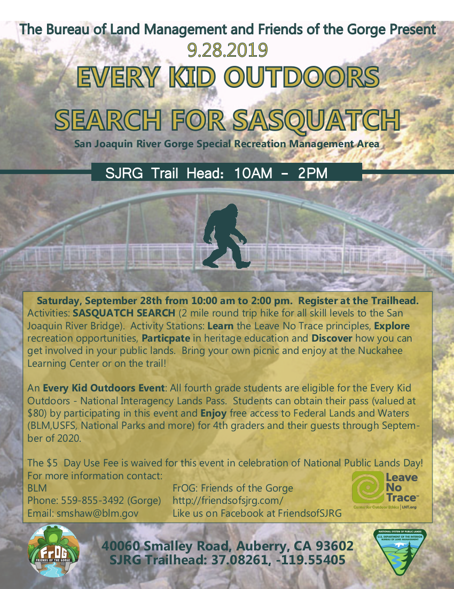

Explore the Gorge
Hiking, Camping, Horseback Riding and More!Plan Your Trip
Hours:
The San Joaquin River Gorge Recreation Area site campgrounds, trails, picnic areas, indigenous village, group areas and scenic views are always open to the public. The Standard Amenity/Entrance Fee per Day is $5.00 per vehicle, and there are fees for camping and group areas.
The Visitor Center is currently open only part time.
Directions:
You can travel by vehicle to the San Joaquin River Gorge on Smalley Road, a two-lane paved road that provides easy year-round access. From Fresno, take Highway 168 towards Prather, turn left onto Auberry Road; travel 2.9 miles through Auberry and turn left at the “Y” onto Powerhouse Road. Continue 1.8 miles to Smalley Road on the left, traveling downhill (about 3 miles) to the recreation area.
Access by water craft and on foot: from Millerton travel up river to the Gorge by boat or via hiking trails from the Madera or Fresno trails to the Gorge.
Admission:
Standard daily amenities fee per vehicle - $5.00
BLM Fee FREE Days: Martin Luther King Jr. Day, President’s Day, National Get Outdoors Day, National Public Lands Day, Veterans Day.
Federal Passes:
Obtain these Federal Passes in person at a federal recreation site and for additional information on all passes visit the National Parks Service website.
Annual Pass – America the Beautiful: Everyone can use this annual pass, cost of $80.00, non-transferable; check for specifics at Visitor Center or online.
Lifetime Senior Pass: for those 62+ is $80.00; You can purchase in person and will need proof of age and residency/citizenship. Or you can get an Annual Senior Pass for $20. Note: Save your receipts and trade four (4) Annual Senior Passes from prior years for a Lifetime Senior Pass.
Access Pass: This pass is free to U.S. citizens or permanent residents with disabilities. You must provide documentation of permanent disability and residency or citizenship. Obtain this pass in person at a federal recreation site. Review information for discounts and what the pass covers. Golden Access Passports continue to be honored.
Military Annual Pass: Free annual pass for active U.S. military members and dependents in the Army, Navy, Air Force, Marines, and Coast Guard as well as Reserve and National Guard.
Annual 4th Grade Pass: Free, non-transferable and valid only for one school year to the following summer (e.g. September 1st 2019 through August 31st 2020). Obtain a paper pass from the Every Kid in a Park website and exchange it for the Annual 4th Grade Pass at federal recreation sites.
Volunteer Pass: Free to volunteers with 250+ service hours with federal agencies that participate in the Interagency Pass Program (like we do at SJRG). Contact your local federal recreation site for information about volunteer opportunities or visit volunteer.gov.
Upcoming Events
Northern Taurids Meteor Shower
When: October 20 - December 10 (peak: Nov 11-12th)
This shower is much like the Southern Taurids, just active a bit later in the year. When the two showers are active simultaneously in late October and early November, there is sometimes an notable increase in the fireball activity. There seems to be a seven year periodicity with these fireballs. 2008 and 2015 both produced remarkable fireball activity!
For more information check out the American Meteor Society's website here.
Nature Hikes
The San Joaquin River Gorge is home to hundreds of plant and animal species. Experience them first-hand on a nature hike!
What animals might you find? Bald eagles, golden eagles, Swainson's hawks, mule deer, bob cats, mountain lions, frogs, salamanders, lizards, skinks, turtles, chipmonks, ducks, geese, foxes, and many, many more.
Every Kid Outside Event: Search for Sasquatch!
Have Your Special Events at SJRG
Reserve a campground - Two walk-in group sites are available that accomodate 150 people each. These sites are accessible a short distance from the paved parking area via a hardened dirt path. A large paved parking lot can accommodate large trailers or motor homes with drinking water at campsites.
Group Camping - ("Aholul Campsite") is $175/day. This group camp is designed to host groups and still provide a day use picnic area for other guests. Special Recreation Permit (SRP) fees may be charged for organized group activities. Commercial tours including recreation events, competitive events, outfitter-guide services, or activities for which a permit is required to ensure public safety also need an SRP. Call the Bureau of Land Management office at the Gorge at 559-855-3492 for availability information and making reservations.
Large group celebrations happen at the Pole Barn. This site features a large covered picnic area with lights and electrical outlets, flush toilets, sinks, a full-service kitchen, metal tables, shades and a campfire ring with benches.
Pole Barn - ("Nuck-a-Hee Learning Center") Rental requires a Special Use Permit for family and other group events at $300/day, plus a one-time permit fee of $95. For exclusive use of the area, a $195 fee is charged. A $5.00 per person per day fee may be assessed in addition to the permit fees or bonds required.
For more information on reserving these sites, please call the BLM office: 559-855-3492.
Outdoor Fun
Hiking
There are more than 22 miles of hiking and riding trail opportunities providing families, anglers and mountain bikers with beautiful fall, winter and spring scenic vistas.
Scenic trails on the Madera County side of the gorge offer a six-mile hiking loop along the ridge with a four-mile trail along the river. A portion of the sixteen-mile San Joaquin River Trail is on the Fresno County side connected by a bridge.
Camping
There are a few different types of campsites available:
Our smaller, family camp site is "Yeh-Gub-Weh-Tuh" which means Place of Blue Oak in the Mono language. This area consists of six different walk-in sites, two of which are wheelchair accessible. Each site accomodates up to eight people. These have water, garbage, a double vault toilet and a paved parking area. This area also serves as the main trailhead.
We have two larger group camp sites in the "Aholul Group Campground and Day Use Area". They accomodate 250 people total and are accessible a short distance from the paved parking area close to the horse camp. There are six large picnic tables, two large fire rings and a double vault toilet.
First Peoples
The area is within prehistoric boundaries of two Yokuts ("Kechayi" and "Dumna") and two Western Monache (Western Mono and North Fork Mono) tribes. Some members of these tribes still use the area today.
Indigenous Village - Explore a reproduction of a village with a sweat lodge, Cedar bark houses and an acorn granary.
Acorn Prep Rock - A nearby bedrock mortar acorn processing site used to prepare food.
Equestrian Camp
For those interested in the Equestrian Campground, it is accessible by vehicle and has water, garbage and a portable toilet. The corral area is a four stall, fenced-in, pole corral that has a large unpaved parking area.
Friends of the San Joaquin River Gorge
40060 Smalley Road, P.O. Box 248, Auberry, CA 93602
Office: 559-855-3492